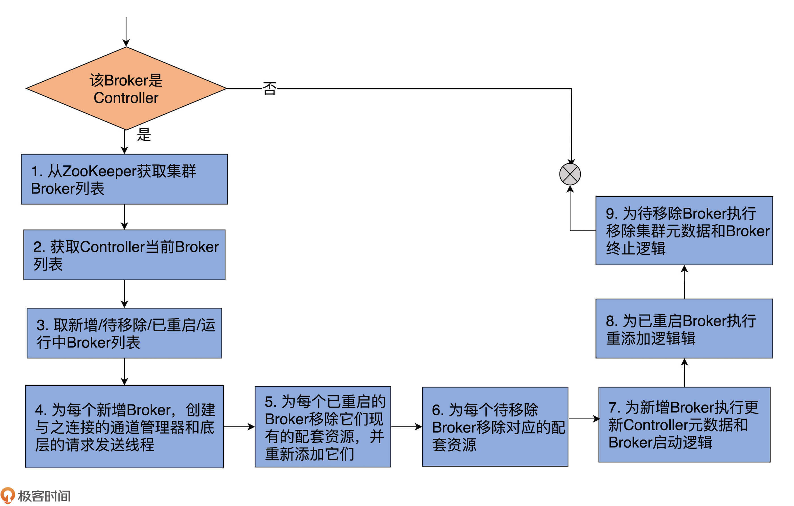
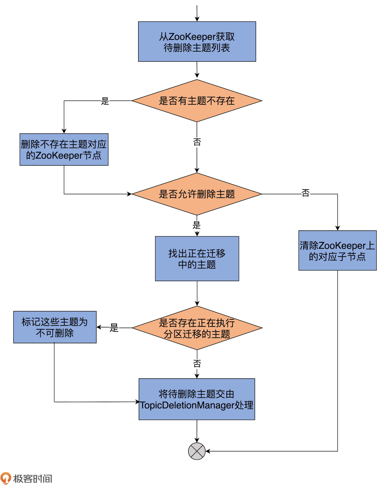
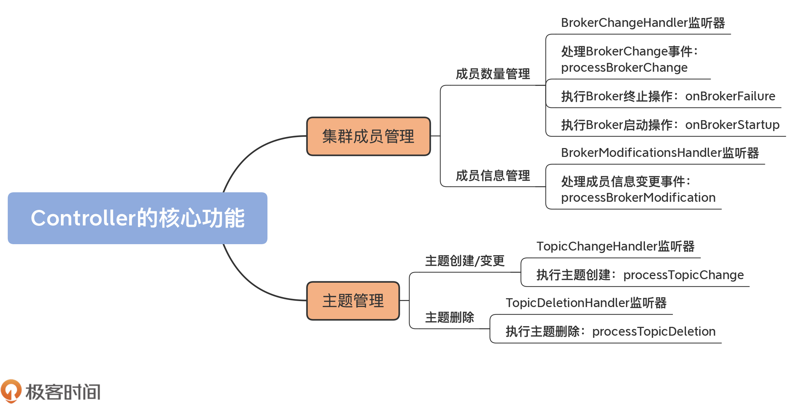

- 00 导读 构建Kafka工程和源码阅读环境、Scala语言热身.md.html
- 00 开篇词 阅读源码，逐渐成了职业进阶道路上的“必选项”.md.html
- 00 重磅加餐 带你快速入门Scala语言.md.html
- 01 日志段：保存消息文件的对象是怎么实现的？.md.html
- 02 日志（上）：日志究竟是如何加载日志段的？.md.html
- 03 日志（下）：彻底搞懂Log对象的常见操作.md.html
- 04 索引（上）：改进的二分查找算法在Kafka索引的应用.md.html
- 05 索引（下）：位移索引和时间戳索引的区别是什么？.md.html
- 06 请求通道：如何实现Kafka请求队列？.md.html
- 07 SocketServer（上）：Kafka到底是怎么应用NIO实现网络通信的？.md.html
- 08 SocketServer（中）：请求还要区分优先级？.md.html
- 09 SocketServer（下）：请求处理全流程源码分析.md.html
- 10 KafkaApis：Kafka最重要的源码入口，没有之一.md.html
- 11 Controller元数据：Controller都保存有哪些东西？有几种状态？.md.html
- 12 ControllerChannelManager：Controller如何管理请求发送？.md.html
- 13 ControllerEventManager：变身单线程后的Controller如何处理事件？.md.html
- 14 Controller选举是怎么实现的？.md.html
- 15 如何理解Controller在Kafka集群中的作用？.md.html
- 16 TopicDeletionManager： Topic是怎么被删除的？.md.html
- 17 ReplicaStateMachine：揭秘副本状态机实现原理.md.html
- 18 PartitionStateMachine：分区状态转换如何实现？.md.html
- 19 TimingWheel：探究Kafka定时器背后的高效时间轮算法.md.html
- 20 DelayedOperation：Broker是怎么延时处理请求的？.md.html
- 21 AbstractFetcherThread：拉取消息分几步？.md.html
- 22 ReplicaFetcherThread：Follower如何拉取Leader消息？.md.html
- 23 ReplicaManager（上）：必须要掌握的副本管理类定义和核心字段.md.html
- 24 ReplicaManager（中）：副本管理器是如何读写副本的？.md.html
- 25 ReplicaManager（下）：副本管理器是如何管理副本的？.md.html
- 26 MetadataCache：Broker是怎么异步更新元数据缓存的？.md.html
- 27 消费者组元数据（上）：消费者组都有哪些元数据？.md.html
- 28 消费者组元数据（下）：Kafka如何管理这些元数据？.md.html
- 29 GroupMetadataManager：组元数据管理器是个什么东西？.md.html
- 30 GroupMetadataManager：位移主题保存的只是位移吗？.md.html
- 31 GroupMetadataManager：查询位移时，不用读取位移主题？.md.html
- 32 GroupCoordinator：在Rebalance中，Coordinator如何处理成员入组？.md.html
- 33 GroupCoordinator：在Rebalance中，如何进行组同步？.md.html
- 特别放送（一）经典的Kafka学习资料有哪些？.md.html
- 特别放送（三）我是怎么度过日常一天的？.md.html
- 特别放送（二）一篇文章带你了解参与开源社区的全部流程.md.html
- 特别放送（五） Kafka 社区的重磅功能：移除 ZooKeeper 依赖.md.html
- 特别放送（四）20道经典的Kafka面试题详解.md.html
- 结束语 源码学习，我们才刚上路呢.md.html
- 捐赠
15 如何理解Controller在Kafka集群中的作用？
你好，我是胡夕。
上节课，我们学习了Controller选举的源码，了解了Controller组件的选举触发场景，以及它是如何被选举出来的。Controller就绪之后，就会行使它作为控制器的重要权利了，包括管理集群成员、维护主题、操作元数据，等等。
之前在学习Kafka的时候，我一直很好奇，新启动的Broker是如何加入到集群中的。官方文档里的解释是：“Adding servers to a Kafka cluster is easy, just assign them a unique broker id and start up Kafka on your new servers.”显然，你只要启动Broker进程，就可以实现集群的扩展，甚至包括集群元数据信息的同步。
不过，你是否思考过，这一切是怎么做到的呢？其实，这就是Controller组件源码提供的一个重要功能：管理新集群成员。
当然，作为核心组件，Controller提供的功能非常多。除了集群成员管理，主题管理也是一个极其重要的功能。今天，我就带你深入了解下它们的实现代码。可以说，这是Controller最核心的两个功能，它们几乎涉及到了集群元数据中的所有重要数据。掌握了这些，之后你在探索Controller的其他代码时，会更加游刃有余。
集群成员管理
首先，我们来看Controller管理集群成员部分的代码。这里的成员管理包含两个方面：
- 成员数量的管理，主要体现在新增成员和移除现有成员；
- 单个成员的管理，如变更单个Broker的数据等。
成员数量管理
每个Broker在启动的时候，会在ZooKeeper的/brokers/ids节点下创建一个名为broker.id参数值的临时节点。
举个例子，假设Broker的broker.id参数值设置为1001，那么，当Broker启动后，你会在ZooKeeper的/brokers/ids下观测到一个名为1001的子节点。该节点的内容包括了Broker配置的主机名、端口号以及所用监听器的信息（注意：这里的监听器和上面说的ZooKeeper监听器不是一回事）。
当该Broker正常关闭或意外退出时，ZooKeeper上对应的临时节点会自动消失。
基于这种临时节点的机制，Controller定义了BrokerChangeHandler监听器，专门负责监听/brokers/ids下的子节点数量变化。
一旦发现新增或删除Broker，/brokers/ids下的子节点数目一定会发生变化。这会被Controller侦测到，进而触发BrokerChangeHandler的处理方法，即handleChildChange方法。
我给出BrokerChangeHandler的代码。可以看到，这里面定义了handleChildChange方法：
class BrokerChangeHandler(eventManager: ControllerEventManager) extends ZNodeChildChangeHandler {
// Broker ZooKeeper ZNode: /brokers/ids
override val path: String = BrokerIdsZNode.path
override def handleChildChange(): Unit = {
eventManager.put(BrokerChange) // 仅仅是向事件队列写入BrokerChange事件
}
}
该方法的作用就是向Controller事件队列写入一个BrokerChange事件。事实上，Controller端定义的所有Handler的处理逻辑，都是向事件队列写入相应的ControllerEvent，真正的事件处理逻辑位于KafkaController类的process方法中。
那么，接下来，我们就来看process方法。你会发现，处理BrokerChange事件的方法实际上是processBrokerChange，代码如下：
private def processBrokerChange(): Unit = {
// 如果该Broker不是Controller，自然无权处理，直接返回
if (!isActive) return
// 第1步：从ZooKeeper中获取集群Broker列表
val curBrokerAndEpochs = zkClient.getAllBrokerAndEpochsInCluster
val curBrokerIdAndEpochs = curBrokerAndEpochs map { case (broker, epoch) => (broker.id, epoch) }
val curBrokerIds = curBrokerIdAndEpochs.keySet
// 第2步：获取Controller当前保存的Broker列表
val liveOrShuttingDownBrokerIds = controllerContext.liveOrShuttingDownBrokerIds
// 第3步：比较两个列表，获取新增Broker列表、待移除Broker列表、
// 已重启Broker列表和当前运行中的Broker列表
val newBrokerIds = curBrokerIds.diff(liveOrShuttingDownBrokerIds)
val deadBrokerIds = liveOrShuttingDownBrokerIds.diff(curBrokerIds)
val bouncedBrokerIds = (curBrokerIds & liveOrShuttingDownBrokerIds)
.filter(brokerId => curBrokerIdAndEpochs(brokerId) > controllerContext.liveBrokerIdAndEpochs(brokerId))
val newBrokerAndEpochs = curBrokerAndEpochs.filter { case (broker, _) => newBrokerIds.contains(broker.id) }
val bouncedBrokerAndEpochs = curBrokerAndEpochs.filter { case (broker, _) => bouncedBrokerIds.contains(broker.id) }
val newBrokerIdsSorted = newBrokerIds.toSeq.sorted
val deadBrokerIdsSorted = deadBrokerIds.toSeq.sorted
val liveBrokerIdsSorted = curBrokerIds.toSeq.sorted
val bouncedBrokerIdsSorted = bouncedBrokerIds.toSeq.sorted
info(s"Newly added brokers: ${newBrokerIdsSorted.mkString(",")}, " +
s"deleted brokers: ${deadBrokerIdsSorted.mkString(",")}, " +
s"bounced brokers: ${bouncedBrokerIdsSorted.mkString(",")}, " +
s"all live brokers: ${liveBrokerIdsSorted.mkString(",")}")
// 第4步：为每个新增Broker创建与之连接的通道管理器和
// 底层的请求发送线程（RequestSendThread）
newBrokerAndEpochs.keySet.foreach(
controllerChannelManager.addBroker)
// 第5步：为每个已重启的Broker移除它们现有的配套资源
//（通道管理器、RequestSendThread等），并重新添加它们
bouncedBrokerIds.foreach(controllerChannelManager.removeBroker)
bouncedBrokerAndEpochs.keySet.foreach(
controllerChannelManager.addBroker)
// 第6步：为每个待移除Broker移除对应的配套资源
deadBrokerIds.foreach(controllerChannelManager.removeBroker)
// 第7步：为新增Broker执行更新Controller元数据和Broker启动逻辑
if (newBrokerIds.nonEmpty) {
controllerContext.addLiveBrokers(newBrokerAndEpochs)
onBrokerStartup(newBrokerIdsSorted)
}
// 第8步：为已重启Broker执行重添加逻辑，包含
// 更新ControllerContext、执行Broker重启动逻辑
if (bouncedBrokerIds.nonEmpty) {
controllerContext.removeLiveBrokers(bouncedBrokerIds)
onBrokerFailure(bouncedBrokerIdsSorted)
controllerContext.addLiveBrokers(bouncedBrokerAndEpochs)
onBrokerStartup(bouncedBrokerIdsSorted)
}
// 第9步：为待移除Broker执行移除ControllerContext和Broker终止逻辑
if (deadBrokerIds.nonEmpty) {
controllerContext.removeLiveBrokers(deadBrokerIds)
onBrokerFailure(deadBrokerIdsSorted)
}
if (newBrokerIds.nonEmpty || deadBrokerIds.nonEmpty ||
bouncedBrokerIds.nonEmpty) {
info(s"Updated broker epochs cache: ${controllerContext.liveBrokerIdAndEpochs}")
}
}
代码有点长，你可以看下我添加的重点注释。同时，我再画一张图，帮你梳理下这个方法做的事情。

整个方法共有9步。
第1~3步：
前两步分别是从ZooKeeper和ControllerContext中获取Broker列表；第3步是获取4个Broker列表：新增Broker列表、待移除Broker列表、已重启的Broker列表和当前运行中的Broker列表。
假设前两步中的Broker列表分别用A和B表示，由于Kafka以ZooKeeper上的数据为权威数据，因此，A就是最新的运行中Broker列表，“A-B”就表示新增的Broker，“B-A”就表示待移除的Broker。
已重启的Broker的判断逻辑要复杂一些，它判断的是A∧B集合中的那些Epoch值变更了的Broker。你大体上可以把Epoch值理解为Broker的版本或重启的次数。显然，Epoch值变更了，就说明Broker发生了重启行为。
第4~9步：
拿到这些集合之后，Controller会分别为这4个Broker列表执行相应的操作，也就是这个方法中第4~9步要做的事情。总体上，这些相应的操作分为3类。
- 执行元数据更新操作：调用ControllerContext类的各个方法，更新不同的集群元数据信息。比如需要将新增Broker加入到集群元数据，将待移除Broker从元数据中移除等。
- 执行Broker终止操作：为待移除Broker和已重启Broker调用onBrokerFailure方法。
- 执行Broker启动操作：为已重启Broker和新增Broker调用onBrokerStartup方法。
下面我们深入了解下onBrokerFailure和onBrokerStartup方法的逻辑。相比于其他方法，这两个方法的代码逻辑有些复杂，要做的事情也很多，因此，我们重点研究下它们。
首先是处理Broker终止逻辑的onBrokerFailure方法，代码如下：
private def onBrokerFailure(deadBrokers: Seq[Int]): Unit = {
info(s"Broker failure callback for ${deadBrokers.mkString(",")}")
// 第1步：为每个待移除Broker，删除元数据对象中的相关项
deadBrokers.foreach(controllerContext.replicasOnOfflineDirs.remove
// 第2步：将待移除Broker从元数据对象中处于已关闭状态的Broker列表中去除
val deadBrokersThatWereShuttingDown =
deadBrokers.filter(id => controllerContext.shuttingDownBrokerIds.remove(id))
if (deadBrokersThatWereShuttingDown.nonEmpty)
info(s"Removed ${deadBrokersThatWereShuttingDown.mkString(",")} from list of shutting down brokers.")
// 第3步：找出待移除Broker上的所有副本对象，执行相应操作，
// 将其置为“不可用状态”（即Offline）
val allReplicasOnDeadBrokers = controllerContext.replicasOnBrokers(deadBrokers.toSet)
onReplicasBecomeOffline(allReplicasOnDeadBrokers)
// 第4步：注销注册的BrokerModificationsHandler监听器
unregisterBrokerModificationsHandler(deadBrokers)
}
Broker终止，意味着我们必须要删除Controller元数据缓存中与之相关的所有项，还要处理这些Broker上保存的副本。最后，我们还要注销之前为该Broker注册的BrokerModificationsHandler监听器。
其实，主体逻辑在于如何处理Broker上的副本对象，即onReplicasBecomeOffline方法。该方法大量调用了Kafka副本管理器和分区管理器的相关功能，后面我们会专门学习这两个管理器，因此这里我就不展开讲了。
现在，我们看onBrokerStartup方法。它是处理Broker启动的方法，也就是Controller端应对集群新增Broker启动的方法。同样，我先给出带注释的完整方法代码：
private def onBrokerStartup(newBrokers: Seq[Int]): Unit = {
info(s"New broker startup callback for ${newBrokers.mkString(",")}")
// 第1步：移除元数据中新增Broker对应的副本集合
newBrokers.foreach(controllerContext.replicasOnOfflineDirs.remove)
val newBrokersSet = newBrokers.toSet
val existingBrokers = controllerContext.
liveOrShuttingDownBrokerIds.diff(newBrokersSet)
// 第2步：给集群现有Broker发送元数据更新请求，令它们感知到新增Broker的到来
sendUpdateMetadataRequest(existingBrokers.toSeq, Set.empty)
// 第3步：给新增Broker发送元数据更新请求，令它们同步集群当前的所有分区数据
sendUpdateMetadataRequest(newBrokers, controllerContext.partitionLeadershipInfo.keySet)
val allReplicasOnNewBrokers = controllerContext.replicasOnBrokers(newBrokersSet)
// 第4步：将新增Broker上的所有副本设置为Online状态，即可用状态
replicaStateMachine.handleStateChanges(
allReplicasOnNewBrokers.toSeq, OnlineReplica)
partitionStateMachine.triggerOnlinePartitionStateChange()
// 第5步：重启之前暂停的副本迁移操作
maybeResumeReassignments { (_, assignment) =>
assignment.targetReplicas.exists(newBrokersSet.contains)
}
val replicasForTopicsToBeDeleted = allReplicasOnNewBrokers.filter(p => topicDeletionManager.isTopicQueuedUpForDeletion(p.topic))
// 第6步：重启之前暂停的主题删除操作
if (replicasForTopicsToBeDeleted.nonEmpty) {
info(s"Some replicas ${replicasForTopicsToBeDeleted.mkString(",")} for topics scheduled for deletion " +
s"${controllerContext.topicsToBeDeleted.mkString(",")} are on the newly restarted brokers " +
s"${newBrokers.mkString(",")}. Signaling restart of topic deletion for these topics")
topicDeletionManager.resumeDeletionForTopics(
replicasForTopicsToBeDeleted.map(_.topic))
}
// 第7步：为新增Broker注册BrokerModificationsHandler监听器
registerBrokerModificationsHandler(newBrokers)
}
如代码所示，第1步是移除新增Broker在元数据缓存中的信息。你可能会问：“这些Broker不都是新增的吗？元数据缓存中有它们的数据吗？”实际上，这里的newBrokers仅仅表示新启动的Broker，它们不一定是全新的Broker。因此，这里的删除元数据缓存是非常安全的做法。
第2、3步：分别给集群的已有Broker和新增Broker发送更新元数据请求。这样一来，整个集群上的Broker就可以互相感知到彼此，而且最终所有的Broker都能保存相同的分区数据。
第4步：将新增Broker上的副本状态置为Online状态。Online状态表示这些副本正常提供服务，即Leader副本对外提供读写服务，Follower副本自动向Leader副本同步消息。
第5、6步：分别重启可能因为新增Broker启动、而能够重新被执行的副本迁移和主题删除操作。
第7步：为所有新增Broker注册BrokerModificationsHandler监听器，允许Controller监控它们在ZooKeeper上的节点的数据变更。
成员信息管理
了解了Controller管理集群成员数量的机制之后，接下来，我们要重点学习下Controller如何监听Broker端信息的变更，以及具体的操作。
和管理集群成员类似，Controller也是通过ZooKeeper监听器的方式来应对Broker的变化。这个监听器就是BrokerModificationsHandler。一旦Broker的信息发生变更，该监听器的handleDataChange方法就会被调用，向事件队列写入BrokerModifications事件。
KafkaController类的processBrokerModification方法负责处理这类事件，代码如下：
private def processBrokerModification(brokerId: Int): Unit = {
if (!isActive) return
// 第1步：获取目标Broker的详细数据，
// 包括每套监听器配置的主机名、端口号以及所使用的安全协议等
val newMetadataOpt = zkClient.getBroker(brokerId)
// 第2步：从元数据缓存中获得目标Broker的详细数据
val oldMetadataOpt = controllerContext.liveOrShuttingDownBroker(brokerId)
if (newMetadataOpt.nonEmpty && oldMetadataOpt.nonEmpty) {
val oldMetadata = oldMetadataOpt.get
val newMetadata = newMetadataOpt.get
// 第3步：如果两者不相等，说明Broker数据发生了变更
// 那么，更新元数据缓存，以及执行onBrokerUpdate方法处理Broker更新的逻辑
if (newMetadata.endPoints != oldMetadata.endPoints) {
info(s"Updated broker metadata: $oldMetadata -> $newMetadata")
controllerContext.updateBrokerMetadata(oldMetadata, newMetadata)
onBrokerUpdate(brokerId)
}
}
}
该方法首先获取ZooKeeper上最权威的Broker数据，将其与元数据缓存上的数据进行比对。如果发现两者不一致，就会更新元数据缓存，同时调用onBrokerUpdate方法执行更新逻辑。
那么，onBrokerUpdate方法又是如何实现的呢？我们先看下代码：
private def onBrokerUpdate(updatedBrokerId: Int): Unit = {
info(s"Broker info update callback for $updatedBrokerId")
// 给集群所有Broker发送UpdateMetadataRequest，让她它们去更新元数据
sendUpdateMetadataRequest(
controllerContext.liveOrShuttingDownBrokerIds.toSeq, Set.empty)
}
可以看到，onBrokerUpdate就是向集群所有Broker发送更新元数据信息请求，把变更信息广播出去。
怎么样，应对Broker信息变更的方法还是比较简单的吧？
主题管理
除了维护集群成员之外，Controller还有一个重要的任务，那就是对所有主题进行管理，主要包括主题的创建、变更与删除。
掌握了前面集群成员管理的方法，在学习下面的内容时会轻松很多。因为它们的实现机制是一脉相承的，几乎没有任何差异。
主题创建/变更
我们重点学习下主题是如何被创建的。实际上，主题变更与创建是相同的逻辑，因此，源码使用了一套监听器统一处理这两种情况。
你一定使用过Kafka的kafka-topics脚本或AdminClient创建主题吧？实际上，这些工具仅仅是向ZooKeeper对应的目录下写入相应的数据而已，那么，Controller，或者说Kafka集群是如何感知到新创建的主题的呢？
这当然要归功于监听主题路径的ZooKeeper监听器：TopicChangeHandler。代码如下：
class TopicChangeHandler(eventManager: ControllerEventManager) extends ZNodeChildChangeHandler {
// ZooKeeper节点：/brokers/topics
override val path: String = TopicsZNode.path
// 向事件队列写入TopicChange事件
override def handleChildChange(): Unit = eventManager.put(TopicChange)
}
代码中的TopicsZNode.path就是ZooKeeper下/brokers/topics节点。一旦该节点下新增了主题信息，该监听器的handleChildChange就会被触发，Controller通过ControllerEventManager对象，向事件队列写入TopicChange事件。
KafkaController的process方法接到该事件后，调用processTopicChange方法执行主题创建。代码如下：
private def processTopicChange(): Unit = {
if (!isActive) return
// 第1步：从ZooKeeper中获取所有主题
val topics = zkClient.getAllTopicsInCluster(true)
// 第2步：与元数据缓存比对，找出新增主题列表与已删除主题列表
val newTopics = topics -- controllerContext.allTopics
val deletedTopics = controllerContext.allTopics.diff(topics)
// 第3步：使用ZooKeeper中的主题列表更新元数据缓存
controllerContext.setAllTopics(topics)
// 第4步：为新增主题注册分区变更监听器
// 分区变更监听器是监听主题分区变更的
registerPartitionModificationsHandlers(newTopics.toSeq)
// 第5步：从ZooKeeper中获取新增主题的副本分配情况
val addedPartitionReplicaAssignment = zkClient.getFullReplicaAssignmentForTopics(newTopics)
// 第6步：清除元数据缓存中属于已删除主题的缓存项
deletedTopics.foreach(controllerContext.removeTopic)
// 第7步：为新增主题更新元数据缓存中的副本分配条目
addedPartitionReplicaAssignment.foreach {
case (topicAndPartition, newReplicaAssignment) => controllerContext.updatePartitionFullReplicaAssignment(topicAndPartition, newReplicaAssignment)
}
info(s"New topics: [$newTopics], deleted topics: [$deletedTopics], new partition replica assignment " +
s"[$addedPartitionReplicaAssignment]")
// 第8步：调整新增主题所有分区以及所属所有副本的运行状态为“上线”状态
if (addedPartitionReplicaAssignment.nonEmpty)
onNewPartitionCreation(addedPartitionReplicaAssignment.keySet)
}
虽然一共有8步，但大部分的逻辑都与更新元数据缓存项有关，因此，处理逻辑总体上还是比较简单的。需要注意的是，第8步涉及到了使用分区管理器和副本管理器来调整分区和副本状态。后面我们会详细介绍。这里你只需要知道，分区和副本处于“上线”状态，就表明它们能够正常工作，就足够了。
主题删除
和主题创建或变更类似，删除主题也依赖ZooKeeper监听器完成。
Controller定义了TopicDeletionHandler，用它来实现对删除主题的监听，代码如下：
class TopicDeletionHandler(eventManager: ControllerEventManager) extends ZNodeChildChangeHandler {
// ZooKeeper节点：/admin/delete_topics
override val path: String = DeleteTopicsZNode.path
// 向事件队列写入TopicDeletion事件
override def handleChildChange(): Unit = eventManager.put(TopicDeletion)
}
这里的DeleteTopicsZNode.path指的是/admin/delete_topics节点。目前，无论是kafka-topics脚本，还是AdminClient，删除主题都是在/admin/delete_topics节点下创建名为待删除主题名的子节点。
比如，如果我要删除test-topic主题，那么，Kafka的删除命令仅仅是在ZooKeeper上创建/admin/delete_topics/test-topic节点。一旦监听到该节点被创建，TopicDeletionHandler的handleChildChange方法就会被触发，Controller会向事件队列写入TopicDeletion事件。
处理TopicDeletion事件的方法是processTopicDeletion，代码如下：
private def processTopicDeletion(): Unit = {
if (!isActive) return
// 从ZooKeeper中获取待删除主题列表
var topicsToBeDeleted = zkClient.getTopicDeletions.toSet
debug(s"Delete topics listener fired for topics ${topicsToBeDeleted.mkString(",")} to be deleted")
// 找出不存在的主题列表
val nonExistentTopics = topicsToBeDeleted -- controllerContext.allTopics
if (nonExistentTopics.nonEmpty) {
warn(s"Ignoring request to delete non-existing topics ${nonExistentTopics.mkString(",")}")
zkClient.deleteTopicDeletions(nonExistentTopics.toSeq, controllerContext.epochZkVersion)
}
topicsToBeDeleted --= nonExistentTopics
// 如果delete.topic.enable参数设置成true
if (config.deleteTopicEnable) {
if (topicsToBeDeleted.nonEmpty) {
info(s"Starting topic deletion for topics ${topicsToBeDeleted.mkString(",")}")
topicsToBeDeleted.foreach { topic =>
val partitionReassignmentInProgress = controllerContext.partitionsBeingReassigned.map(_.topic).contains(topic)
if (partitionReassignmentInProgress)
topicDeletionManager.markTopicIneligibleForDeletion(
Set(topic), reason = "topic reassignment in progress")
}
// 将待删除主题插入到删除等待集合交由TopicDeletionManager处理
topicDeletionManager.enqueueTopicsForDeletion(topicsToBeDeleted)
}
} else { // 不允许删除主题
info(s"Removing $topicsToBeDeleted since delete topic is disabled")
// 清除ZooKeeper下/admin/delete_topics下的子节点
zkClient.deleteTopicDeletions(topicsToBeDeleted.toSeq, controllerContext.epochZkVersion)
}
}
为了帮助你更直观地理解，我再画一张图来说明下：

首先，代码从ZooKeeper的/admin/delete_topics下获取子节点列表，即待删除主题列表。
之后，比对元数据缓存中的主题列表，获知压根不存在的主题列表。如果确实有不存在的主题，删除/admin/delete_topics下对应的子节点就行了。同时，代码会更新待删除主题列表，将这些不存在的主题剔除掉。
接着，代码会检查Broker端参数delete.topic.enable的值。如果该参数为false，即不允许删除主题，代码就会清除ZooKeeper下的对应子节点，不会做其他操作。反之，代码会遍历待删除主题列表，将那些正在执行分区迁移的主题暂时设置成“不可删除”状态。
最后，把剩下可以删除的主题交由TopicDeletionManager，由它执行真正的删除逻辑。
这里的TopicDeletionManager是Kafka专门负责删除主题的管理器，下节课我会详细讲解它的代码实现。
总结
今天，我们学习了Controller的两个主要功能：管理集群Broker成员和主题。这两个功能是Controller端提供的重要服务。我建议你仔细地查看这两部分的源码，弄明白Controller是如何管理集群中的重要资源的。
针对这些内容，我总结了几个重点，希望可以帮助你更好地理解和记忆。
- 集群成员管理：Controller负责对集群所有成员进行有效管理，包括自动发现新增Broker、自动处理下线Broker，以及及时响应Broker数据的变更。
- 主题管理：Controller负责对集群上的所有主题进行高效管理，包括创建主题、变更主题以及删除主题，等等。对于删除主题而言，实际的删除操作由底层的TopicDeletionManager完成。

接下来，我们将进入到下一个模块：状态机模块。在该模块中，我们将系统学习Kafka提供的三大状态机或管理器。Controller非常依赖这些状态机对下辖的所有Kafka对象进行管理。在下一个模块中，我将带你深入了解分区或副本在底层的状态流转是怎么样的，你一定不要错过。
课后讨论
如果我们想要使用脚本命令增加一个主题的分区，你知道应该用KafkaController类中的哪个方法吗？
欢迎你在留言区畅所欲言，跟我交流讨论，也欢迎你把今天的内容分享给你的朋友。
© 2019 - 2023 Liangliang Lee. Powered by gin and hexo-theme-book.